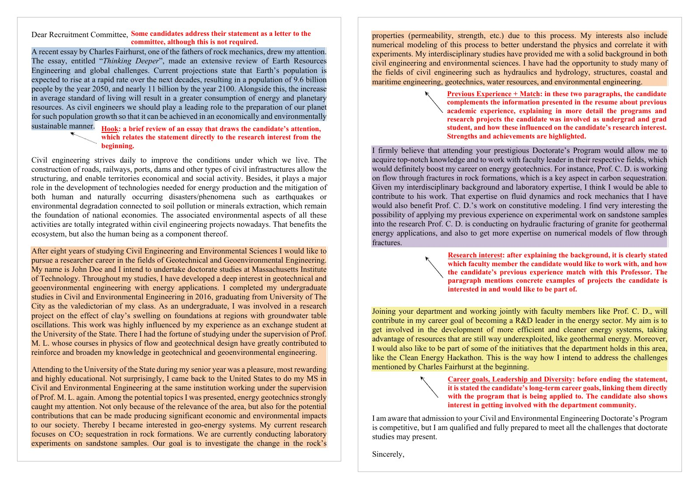
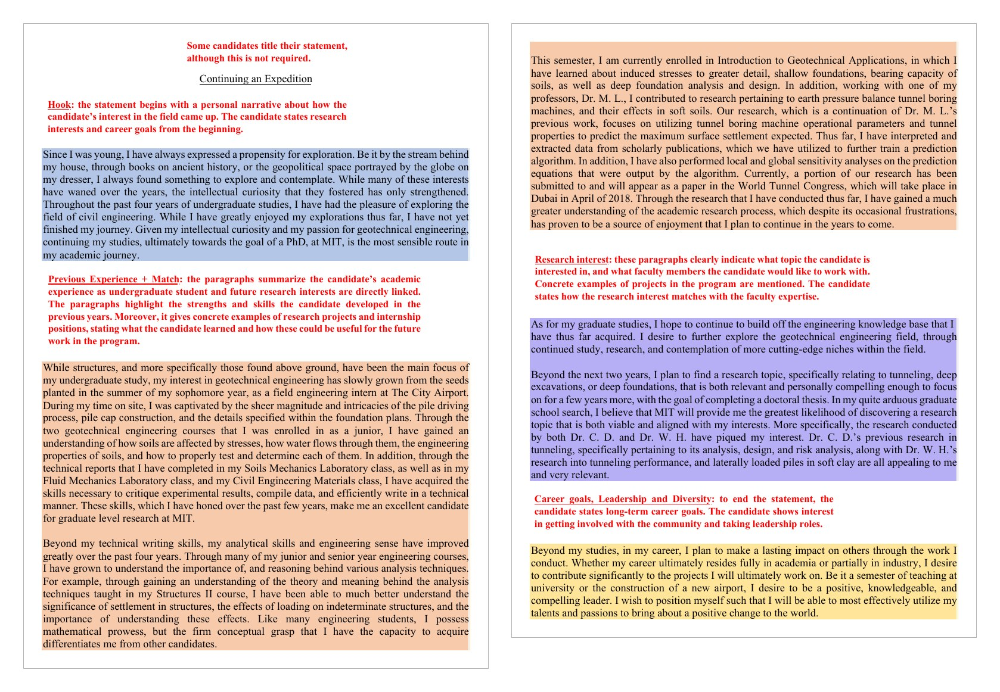

PHYS 4604 · Lecture 9
2026-10-23
| What | When | Points |
|---|---|---|
| NSF GRFP deadline – Physics & Astronomy | Oct. 23 (today), 8:00 PM ET | – |
| Graduate application workshop: bring a statement draft | Oct. 30, in class | – |
| Astrophysics/Astro Graduate Q&A (Room CCB 103) | Nov. 12, 3:30–4:30 PM ET | – |
| Personal statement or cover letter | Nov. 20, 11:59 PM ET | 15% |
| Georgia Tech Physics PhD and BS/MS deadline | Dec. 15 | – |
The goal of today’s lecture: leave with a plan for every piece of your application, and an outline of your statement of purpose to bring to next week’s workshop.
A faculty committee is asking one question: will this person succeed as a graduate student and a scientist, here?
Every piece should point the same way. Your statement makes the claims; your CV and letters back them up.
Also called an academic statement.
Also called a personal history statement.
Some programs ask for both, some for one combined statement. Read each prompt and answer that prompt. Assignment 4 accepts either; write the one your target program asks for.
| Section | What it does | Space |
|---|---|---|
| Opening | Your research interest and goal | 1 paragraph |
| Research experience | The question, your role, the result, what you learned | The most: half a page or more |
| Preparation | Courses, skills, and tools that support it | 1 paragraph |
| Why this program | Faculty, groups, and facilities by name | 1 paragraph, rewritten per program |
| Goals | Where you are headed after the degree | 2–3 sentences |
Typical length is 1–2 pages, or 500–1,000 words. Defer to each program’s requirements.
Before
Ever since I was a child looking up at the night sky, I have been fascinated by the mysteries of the universe.
After
I want to know how dark matter is distributed in dwarf galaxies. For two years I have fit archival rotation curves in Prof. X’s group at Georgia Tech; at [Univ.] I want to test those fits against new radio data.
By the end of your first paragraph, a reader should know your field and what you want to do.
For each project, give:
Before
I worked in a condensed matter lab, where I learned a lot about the research process.
After
In Prof. Y’s lab, I built a four-probe setup and measured the resistivity of 14 thin films from 4 to 300 K. I presented the results at the Spring 2026 Undergraduate Research Symposium.
Write one strong core statement. Rewrite the fit paragraph for every program, and check that you upload the right version to each school.
A bad semester, a low grade in a core course, a gap in your record.
Do
Don’t
My Fall 2024 grades reflect a semester I worked 30 hours a week. Since then my physics GPA is 3.7, including A’s in Quantum Mechanics I and II.
| Instead of | Write |
|---|---|
| I have always been passionate about physics. | (Cut it. Show it through what you did.) |
| I was exposed to research in a world-renowned lab. | I wrote the analysis code for the group’s 2026 cryostat run. |
| I possess strong analytical skills. | I derived and coded the fit model for … |
| Your prestigious program would allow me to… | Prof. Z’s work on … is the next step from my project on … |
| Measurements were taken. | I measured … |

What works
Annotations by the MIT CEE Communication Lab · CC BY-NC 4.0 · Source: (MIT Civil and Environmental Engineering Communication Lab, n.d.)

What works
Annotations by the MIT CEE Communication Lab · CC BY-NC 4.0 · Source: (MIT Civil and Environmental Engineering Communication Lab, n.d.)
When a program asks for one, it wants to know how your background brought you to graduate school, and what you will add.
What goes in
How to write it
It is still a professional document, written for a committee.
If you applied to the NSF GRFP, you have already drafted most of this.
| GRFP document | Becomes |
|---|---|
| Graduate Research Plan | The research-interest and “what I’d work on” paragraphs of your statement of purpose |
| Personal, Relevant Background and Future Goals | Your personal statement, and the research-experience paragraphs of your statement of purpose |
| Broader Impacts, in both | Service, outreach, and mentoring in your personal statement |
Adapt, don’t paste. A different prompt, a different reader, and usually a different length.
Lead with
Compared with your resume
Your CV should back up every claim in your statement. More in the resume and CV guide.
Who
When
Send everything in one email
After
Track every program in one spreadsheet: deadline, fee, statements, letters, and tests.
Fill out the statement of purpose planning worksheet (15 minutes):
Turn it into a one-page draft and bring it to the Oct. 30 workshop.
PHYS 4604 · Fall 2026 · Georgia Institute of Technology